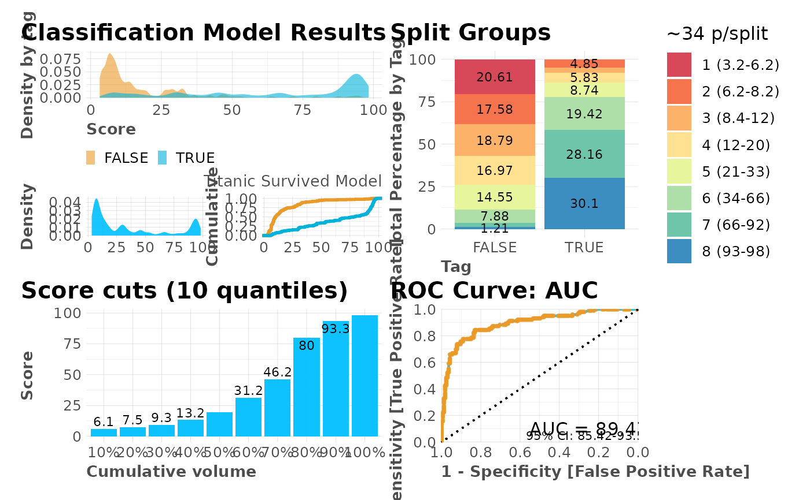
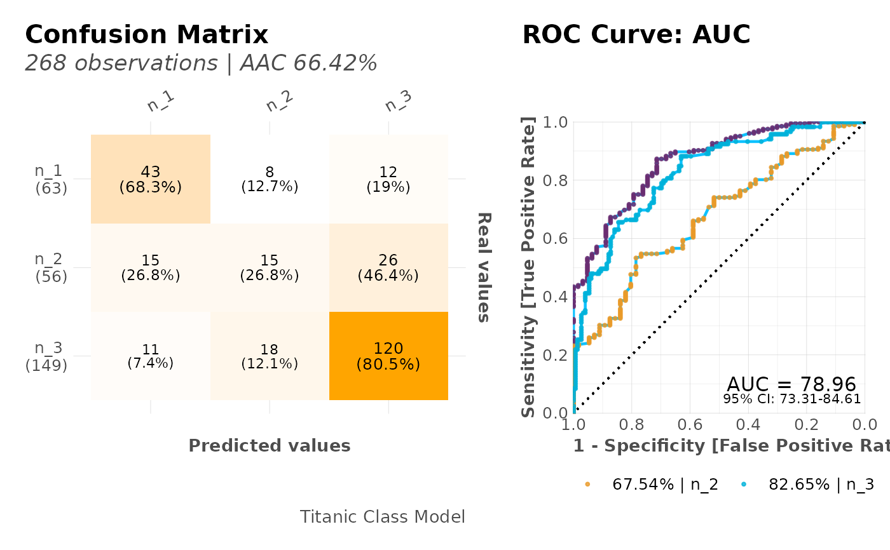
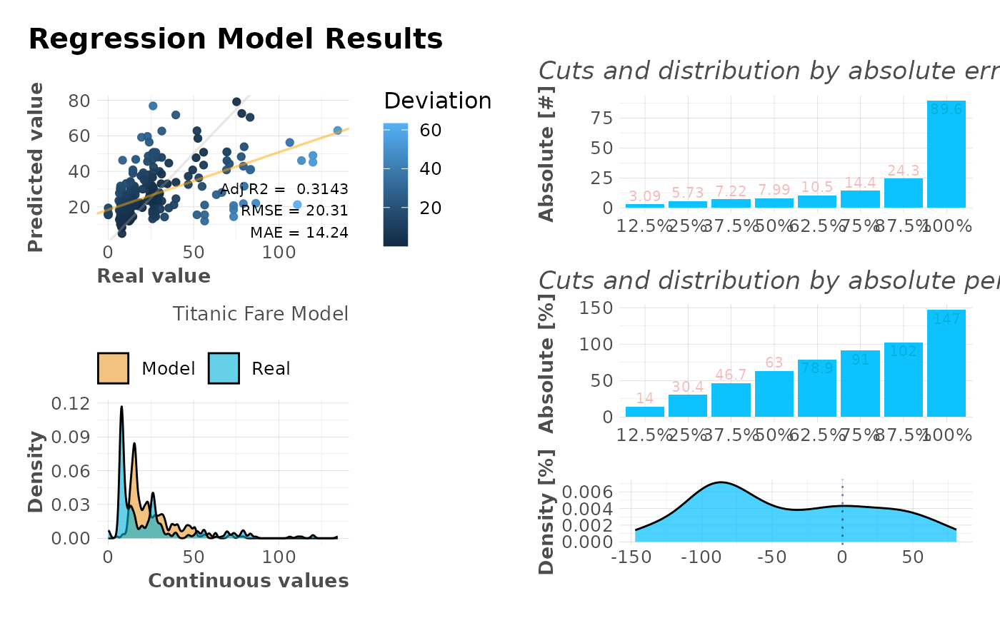

This function plots a whole dashboard with a model's results. It will automatically detect if it's a categorical or regression's model by checking how many different unique values the independent variable (tag) has.
mplot_full(
tag,
score,
multis = NA,
splits = 8,
thresh = 6,
subtitle = NA,
model_name = NA,
plot = TRUE,
save = FALSE,
subdir = NA,
file_name = "viz_full.png"
)Vector. Real known label.
Vector. Predicted value or model's result.
Data.frame. Containing columns with each category probability or score (only used when more than 2 categories coexist).
Integer. Number of separations to plot
Integer. Threshold for selecting binary or regression models: this number is the threshold of unique values we should have in 'tag' (more than: regression; less than: classification)
Character. Subtitle to show in plot
Character. Model's name
Boolean. Plot results? If not, plot grid object returned
Boolean. Save output plot into working directory
Character. Sub directory on which you wish to save the plot
Character. File name as you wish to save the plot
Multiple plots gathered into one, showing tag vs
score performance results.
Other ML Visualization:
mplot_conf(),
mplot_cuts_error(),
mplot_cuts(),
mplot_density(),
mplot_gain(),
mplot_importance(),
mplot_lineal(),
mplot_metrics(),
mplot_response(),
mplot_roc(),
mplot_splits(),
mplot_topcats()
# \donttest{
Sys.unsetenv("LARES_FONT") # Temporal
data(dfr) # Results for AutoML Predictions
lapply(dfr, head)
#> $class2
#> tag scores
#> 1 TRUE 0.3155498
#> 2 TRUE 0.8747599
#> 3 TRUE 0.8952823
#> 4 FALSE 0.0436517
#> 5 TRUE 0.2196593
#> 6 FALSE 0.2816101
#>
#> $class3
#> tag score n_1 n_2 n_3
#> 1 n_3 n_2 0.20343865 0.60825062 0.18831071
#> 2 n_2 n_3 0.17856154 0.07657769 0.74486071
#> 3 n_1 n_1 0.50516951 0.40168718 0.09314334
#> 4 n_3 n_2 0.30880713 0.39062151 0.30057135
#> 5 n_2 n_3 0.01956827 0.07069011 0.90974158
#> 6 n_2 n_3 0.07830017 0.15408720 0.76761264
#>
#> $regr
#> tag score
#> 1 11.1333 25.93200
#> 2 30.0708 39.91900
#> 3 26.5500 50.72246
#> 4 31.2750 47.81292
#> 5 13.0000 30.12853
#> 6 26.0000 13.24153
#>
# Dasboard for Binomial Model
mplot_full(dfr$class2$tag, dfr$class2$scores,
model_name = "Titanic Survived Model"
)

# Dasboard for Multi-Categorical Model
mplot_full(dfr$class3$tag, dfr$class3$score,
multis = subset(dfr$class3, select = -c(tag, score)),
model_name = "Titanic Class Model"
)

# Dasboard for Regression Model
mplot_full(dfr$regr$tag, dfr$regr$score,
model_name = "Titanic Fare Model"
)

# }